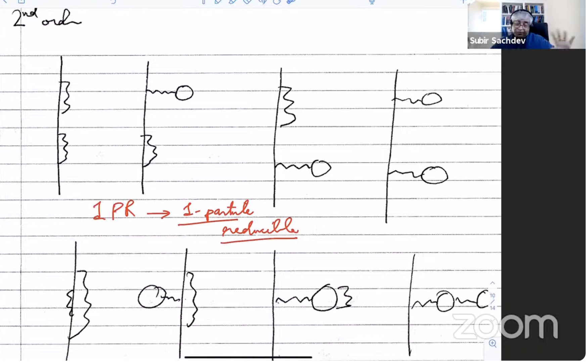
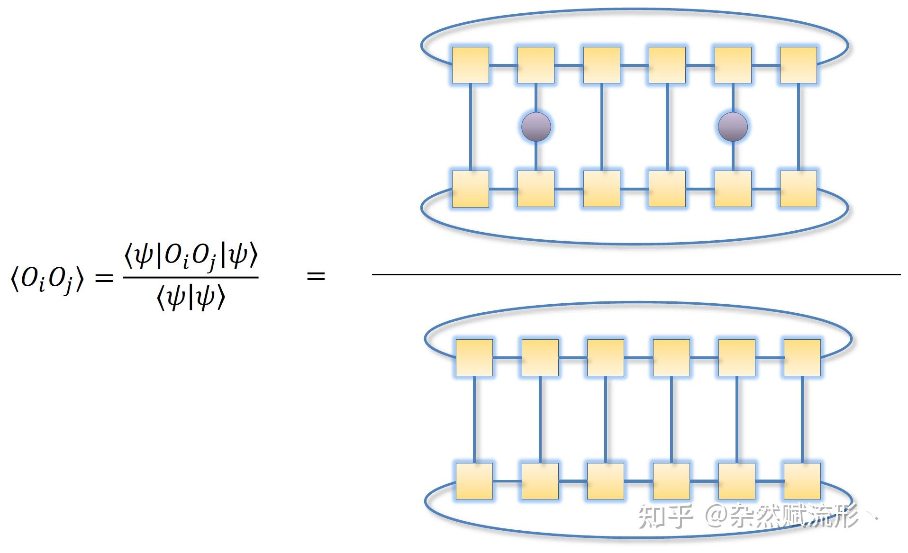
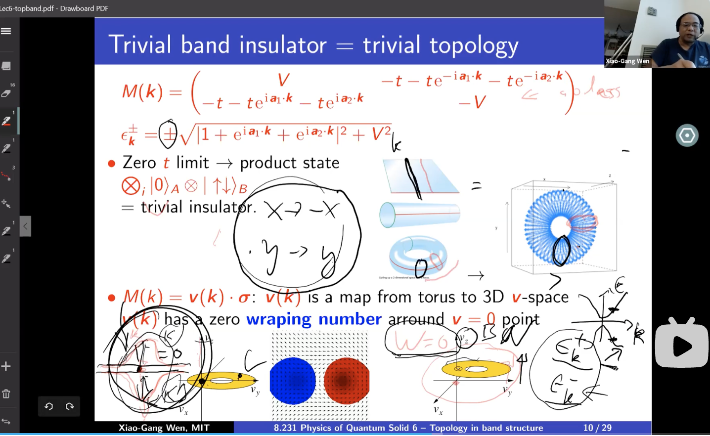

图像
还记得小时候下围棋，每次落子之前都要在脑海中进行计算，特别是遇到死活、对杀、打劫等关键时刻，在算清所有结果后选择对自己最有利的下法，现在回想起来还是很有意思。换句话说，每次在我计算的时候脑海里都有十几步之后局面的图像。
在学习物理的过程中，面对纷繁复杂的公式，有一个清晰直观的物理图像是重要的。也就是说，对于每一个公式或者推导的中间步骤，都需要有一个与之对应的物理图像，这样才是真正理解并记忆了这个公式，而不仅仅是数学上的方法、推导和转换。例如在学习固体物理的过程中，若具有明确的物理直觉可以真正看见电子的运动、散射，而不会沉溺于繁杂的数学中，甚至可以先于数学得出一些高屋建瓴的结论。
一个经典的例子是费曼图。在对松原格林函数做有限温+相互作用的微扰时，不同阶数的微扰对应的微扰项总可以用连通的费曼图表示，其中有两个外部时空节点和一些内部时空节点，箭头直线代表无微扰的格林函数，波浪线代表相互作用的散射过程，所有的内部时空通过积分缩并，代表对所有可能发生的虚散射过程求和。这样的图像化理解不仅只是数学工具，更包含着丰富的物理，把复杂的长串公式浓缩成一幅幅图像。另一个例子是张量网络，把某个量子多体态用一副图像来表示。
之前听文小刚的固体物理课，我就发现其中并没有复杂的公式推导，更多的是back of envelope的估算和量纲分析，但却充斥着物理图像。这恰恰是我比较所欠缺的，我感觉自己每次碰到诸如time scale，spatial scale，energy scale的时候总是转不过来弯，而只会一些固定的formalism去处理问题，不会做估算和近似，不会提出直觉上的物理过程和定性分析。运用固定formalism的分析只会被AI取代，知道如何巧妙的近似以及提出富有洞见的物理图像才是更宝贵的。
本文是西湖大学吴从军教授为怀念莱格特（A. J. Leggett）教授而作。作者回忆了早年在UIUC受教于莱格特的亲身经历，着重刻画了他独特的治学风格：抛开晦涩的数学形式，转而使用最朴素的方法，追求对物理图景的领会。这种不拘教条、启迪思想的治学、育人之道，是一场“以心传心”的智慧交接。风姿长在，心花永传。
撰文 | 吴从军（西湖大学物理系）
托尼⋅莱格特（A. J. Leggett）教授于不久前去世，这个消息令人悲伤。
莱格特教授是著名的理论物理学家，他的一生都献给了凝聚态物理学的研究和教学。他在超流、超导和宏观量子现象等领域内耕耘多年，曾于2003年因为在3He超流等方面的贡献获得诺贝尔物理学奖。除此之外，他还对高温超导对称性的相位敏感探测、量子体系退相干等基本问题，做出了杰出的贡献。
我早年在伊利诺伊大学香槟分校（University of Illinois at Urbana-Champaign, 简称UIUC）学习，期间上过莱格特教授的课。时间已经过去了四分之一个世纪，当年的记忆也开始模糊，但是他对我的研究和教学生涯的影响是持久的。莱格特教授的授业解惑，不囿于表层的推演，而追求物理图景的通透领会，将自己对物理世界的深刻体悟，化作可被理解、可被传承的真知。我对固体物理的直观理解，是通过他的课才有了实质性的提升。
下面我把自己的一些亲身经历和感受分享给大家，算是对莱格特教授的一份怀念。
在UIUC上莱格特教授的课
我在美国读物理学博士的头两年（2000—2002年）是在UIUC的物理系度过的。UIUC地处美国中部的小城，风趣地说，是一座玉米地里的名校。该校的物理系是公认的凝聚态物理圣地，因1950年代巴丁教授（John Bardeen）的加入而达到高峰。巴丁研究组在此做出了常规超导现象的微观理论，被学界称为BCS（Bardeen-Cooper-Schrieffer）理论，是凝聚态物理最重要的成就之一。巴丁也因此获得了他的第二个诺贝尔物理学奖。
那时候，莱格特教授在教凝聚态物理的基础课，包括《超导理论》和《固体理论》，都是硬核的课程。我在国内的时候，已经学习过这两门课，算是有一定的基础。我当时专注于钻研形式理论，例如基于格林函数的计算，具备一些技能，但是这并不代表我能够理解形式背后的物理。在莱格特教授的课上，我慢慢开了窍。可以说，我对固体物理的理解是在UIUC的课堂上打下的基础。
为什么我会有这样的感触呢？
首先是莱格特教授的讲义写得极好。他用最初等的方法，把电子—电子之间、电子—晶格之间的相互作用交代得明明白白，尤其是对超导和磁性等现象解释得清清楚楚。在他的讲义里面，你几乎看不到场论和格林函数这样比较高深的工具，甚至连不算高深的二次量子化方法也用得很少。
他的拿手好戏是写一次量子化的多体变分波函数。当你在和他讨论的时候，他分析的是电子的运动及其对外场的响应，说的语言是屏蔽、散射、交换（exchange）、关联、相干、分子场、守恒律、求和规则等，而不是顶角、自能、有效规范场、禁闭、去禁闭等高深术语……


